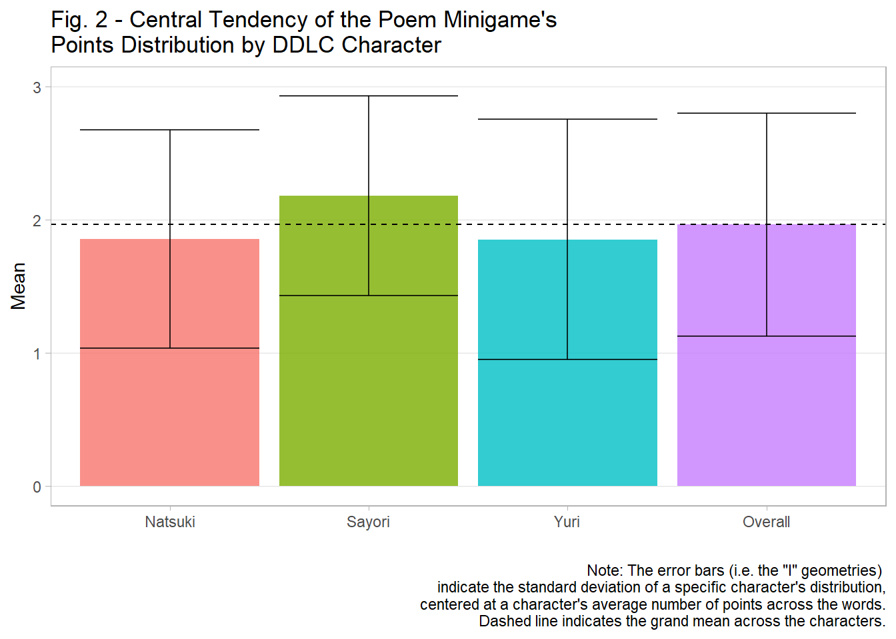

3 Results
3.1 Overview
The purpose of this section is to demonstrate the results of the analysis based on the methodology provided. First, we examine the distribution of the points toward the characters. Next, we compare the central tendencies of the distributions for each of the characters. Then, we conduct ANOVA and Tukey HSD tests to determine whether there exists a statisitcally significant difference in the mean points among the characters, diagnosing the residuals afterward to know whether the residuals are normally distributed. Finally, after determining that the residuals are not normally distributed, I conduct the Kruskal-Wallis and Dunn’s Tests to conclude whether there truly is a statisitcally significant difference.
3.2 Distribution of Points
To create Figure 1 (Points Distribution in the DDLC Poem Minigame), I pivot the original dataset into longform so that we have three columns: Words, Character, and Value–I do this procedure so that plotting the histograms by character could be done simultaneously rather than consequentially. Next, I create a theme called theme_light2(), which is a variation of ggplot2’s theme_light() such that the minor gridlines are removed, as well as the major x-axis ones. Finally, we use ggplot(), geom_histogram(), and facet_wrap() to plot the histograms of the points for each character. From these histograms in Figure 1, most words fall under the 1-point category for both Natsuki and Yuri; but for Sayori, most of her words fall in the 2-point category. Yuri receives the least amount of 2-point words and Natsuki the 3-point words. In contrast, with respect to the 3-point category, Sayori receives the most relative to Natsuki and Yuri. Overall, Sayori has the advantage in obtaining the most frequent 2- and 3-point words.
3.2.1 R Code: Distribution of Points
# Pivot the dataset.
data2 <- gather(data, 'Character', 'Value', 2:4)
# Create a function that sets up the background of the plot.
theme_light2 <- function() {
theme_light() +
theme(panel.grid.minor = element_blank(),
panel.grid.major.x = element_blank())
}
# Generate the plot.
ggplot(data2) +
aes(x = Value, fill = Character) +
geom_histogram(bins = 3, col = 'gray', alpha = 0.8) +
facet_wrap(~ Character) +
guides(fill = FALSE) +
labs(x = 'Points',
y = 'Frequency',
title = 'Fig. 1 - Points Distribution in the DDLC Poem Minigame') +
scale_x_continuous(breaks = 1:3) +
theme_light2()3.3 Central Tendency of the Points
This subsection describes the central tendency of the distribution of the points for each character. Specifically, the individual means and standard deviations (SDs) are discussed, being compared to each other to determine whether there is a difference from a high-level view (i.e., to see whether the means are relatively similar or dissimilar without any statistical tests at this point). To assess the statistical significance among the means, the ANOVA results are presented in section 5.4.
To generate the central tendency of the points among the characters, we apply the aggregate() function and pass an anonymous function that uses mean() and sd() simultaneously; however, because the output of aggregate() in this form will nest the information, we execute do.call(data.frame, l), where l is the aggregated list, to unnest the information. We then rename the columns so that they make more sense to the reader. Finally, we use kable() to generate the mean and SD table.
In this table, Natsuki has an average score of 1.855 +/- 0.819; Sayori has the highest average at 2.180 +/- 0.750; and Yuri has the least at 1.851 +/- 0.903 (Table 2; see Figure 2 for a bar-graph version). With respect to the overall mean, it is 1.962 +/- 0.839, which suggests that Sayori’s points maybe be inflating the overall mean–so to speak–due to her having the average points being more dissimilar to Natuski and Yuri than the reverse: in other words, while Natuski and Yuri have similar means that both round to 1.9, Sayori’s rounds to 2.2, which further suggests that the “true” mean–if the spread of points were under a uniform distribution–would be around 1.800.
3.3.1 R Code: Central Tendency of the Points
# Calculate the mean and SDs of the points for each character.
msd <- aggregate(Value ~ Character,
data2,
function(x) c(Mean = round(mean(x), 3), SD = round(sd(x), 3))) %>%
do.call(data.frame, .)
# Rename the columns.
names(msd) <- c('Character', 'Mean', 'SD')
msd %<>%
rbind(data.frame(Character = 'Overall',
Mean = round(mean(data2$Value), 3),
SD = round(sd(data2$Value), 3)))
# Show the means and standard deviations.
kable(msd, booktabs = TRUE, caption = 'Central Tendency of the Points') %>%
kable_styling(full_width = TRUE, latex_options = "hold_position")| Character | Mean | SD |
|---|---|---|
| Natsuki | 1.855 | 0.819 |
| Sayori | 2.180 | 0.750 |
| Yuri | 1.851 | 0.903 |
| Overall | 1.962 | 0.839 |
3.3.2 R Code: Central Tendency of the Points Bar Graph
# Generate a plot of means and SDs.
ggplot(msd) +
aes(x = Character, y = Mean, fill = Character) +
geom_bar(stat = 'identity', alpha = 0.8) +
geom_errorbar(ymin = msd$Mean - msd$SD,
ymax = msd$Mean + msd$SD,
alpha = 0.8) +
geom_hline(yintercept = mean(msd$Mean), lty = 2) +
ylim(0, 3) +
labs(x = '',
title = 'Fig. 2 - Central Tendency of the Poem Minigame\'s
Points Distribution by DDLC Character',
caption = 'Note: The error bars (i.e. the "I" geometries)
indicate the standard deviation of a specific character\'s distribution,
centered at a character\'s average number of points across the words.
Dashed line indicates the grand mean across the characters.') +
guides(fill = FALSE) +
theme_light2()
3.4 ANOVA
The ANOVA model tests whether there exists an overall statistically significant difference in the means among Natsuki, Sayori, and Yuri. This idea is important on the basis that there should not be a statistically significant difference if the spread of the points follow a uniform distribution. However, as noted in the previous subsection 5.3, the means and SDs are not uniform across the characters. Therefore, the ANOVA will assess this observation, being followed by a Tukey HSD test to examine pairwise-mean tests to see where the difference occurs.
To estimate the ANOVA models in R, we employ the aov() function. Then we convert the results into a dataframe using the tidy() function from the broom library, rounding the results to three significant digits. Then after adjusting the column names to be more understandable of what the statistical metrics are to the reader, we use the kable() function to produce Tables 3 and 4. Based on these tables, there exists a statistically significant difference among the means ((\(F_1\), \(p_1\))) = (11.891, < 0.001) and (\(F_2\), \(p_2\)) = (15.184, < 0.001) respectively). To test where the specific difference occurs, we conduct the Tukey HSD test.
3.4.1 R Code: ANOVA Models
# Estimate ANOVA.
anova1 <- aov(Value ~ Character, data2)
anova2 <- aov(log(Value) ~ Character, data2)
# "Tidy" ANOVA (i.e. convert results into a data frame).
anova1_tidy <- tidy(anova1)
anova2_tidy <- tidy(anova2)
# Round results to three significant digits.
anova1_tidy[, 3:6] %<>% round(., 3)
anova2_tidy[, 3:6] %<>% round(., 3)
# Rename columns so that they are understandable.
names(anova1_tidy) <- c('Term', 'DF', 'Sum of Squares',
'Mean Square', 'F', 'p')
names(anova2_tidy) <- names(anova1_tidy)
# ANOVA 1
kable(anova1_tidy, booktabs = TRUE, caption = 'ANOVA Results') %>%
kable_styling(full_width = TRUE, latex_options = "hold_position") %>%
footnote(general = 'DF = Degrees of Freedom.',
footnote_as_chunk = TRUE)| Term | DF | Sum of Squares | Mean Square | F | p |
|---|---|---|---|---|---|
| Character | 2 | 16.231 | 8.115 | 11.891 | 0 |
| Residuals | 681 | 464.781 | 0.682 | NA | NA |
| Note: DF = Degrees of Freedom. |
# ANOVA 2
kable(anova2_tidy, booktabs = TRUE, caption = 'Log ANOVA Results') %>%
kable_styling(full_width = TRUE, latex_options = "hold_position") %>%
footnote(general = 'DF = Degrees of Freedom.',
footnote_as_chunk = TRUE)| Term | DF | Sum of Squares | Mean Square | F | p |
|---|---|---|---|---|---|
| Character | 2 | 6.373 | 3.187 | 15.184 | 0 |
| Residuals | 681 | 142.924 | 0.210 | NA | NA |
| Note: DF = Degrees of Freedom. |
3.5 Tukey HSD
To conduct the Tukey HSD test to examine pairwise-mean comparisons in R, we use the TukeyHSD() function. After employing it and rounding the values to three significant digits, we rename the colukmns so that the metrics are understandable to the reader. We then use kable() to produce Tables 5 and 6.
In Table 5, the difference in means between Sayori and Natsuki is 0.325 and is statistically significant(CI = [0.143, 0.506], p < 0.001). In contrast to the stark difference, Yuri and Natsuki’s difference in means is -0.004 and not statistically significant (CI = [-0.186, 0.177], p = 0.998). Between Yuri and Sayori, the difference in means is -0.329 and is statistically significant (CI = [-0.511, -0.147], p < 0.001). In turn, Sayori statistically has greater means than Natuski and Yuri at the 5% margin-of-error level.
In Table 6, the difference in log means between Sayori and Natsuki is 0.192 and is statistically significant (CI = [0.091, 0.293], p < 0.001). Inversely, Yuri and Natsuki’s difference in log means is -0.023 and is not statistically significant (CI = [-0.124, 0.078], p = 0.851). Between Yuri and Sayori, the difference in log means is -0.215 (CI = [-0.316, -0.115], p < 0.001). In turn, Sayori statistically has greater means than Natuski and Yuri at the 5% margin-of-error level.
3.5.1 R Code: Tukey HSD Tests
# Obtain the Tukey HSD results
th1 <- round(TukeyHSD(anova1)$Character, 3)
th2 <- round(TukeyHSD(anova2)$Character, 3)
# Rename the columns
colnames(th1) <- c('Difference in Means', 'Lower CI Bound', 'Upper CI Bound',
'Adjusted p-value')
colnames(th2) <- colnames(th1)
# Display the Tukey HSD results.
## Tukey HSD 1
kable(th1, booktabs = TRUE, caption = 'Tukey HSD Results') %>%
kable_styling(full_width = TRUE, latex_options = "hold_position") %>%
footnote(general = 'CI = Confidence Interval',
footnote_as_chunk = TRUE)| Difference in Means | Lower CI Bound | Upper CI Bound | Adjusted p-value | |
|---|---|---|---|---|
| Sayori-Natsuki | 0.325 | 0.143 | 0.506 | 0.000 |
| Yuri-Natsuki | -0.004 | -0.186 | 0.177 | 0.998 |
| Yuri-Sayori | -0.329 | -0.511 | -0.147 | 0.000 |
| Note: CI = Confidence Interval |
## Tukey HSD 2
kable(th2, booktabs = TRUE, caption = 'Log Tukey HSD Results') %>%
kable_styling(full_width = TRUE, latex_options = "hold_position") %>%
footnote(general = 'CI = Confidence Interval',
footnote_as_chunk = TRUE)| Difference in Means | Lower CI Bound | Upper CI Bound | Adjusted p-value | |
|---|---|---|---|---|
| Sayori-Natsuki | 0.192 | 0.091 | 0.293 | 0.000 |
| Yuri-Natsuki | -0.023 | -0.124 | 0.078 | 0.851 |
| Yuri-Sayori | -0.215 | -0.316 | -0.115 | 0.000 |
| Note: CI = Confidence Interval |
3.6 ANOVA Residual Diagnostics
The purpose of this subsection is to diagnose the residuals from the ANOVA model to determine whether an additional test is needed if the residuals do not follow a normal distribution. To do so, we first set up a data frame of predicted values and residuals from the two ANOVA models (the non-logged and logged versions). Then We generate histograms for both of them. As such, based on Figures 3 and 4, the residuals do not resemble a normal distribution: upon examination, they seem to have a bimodal distribution with an emphasis on the negative side (in other words, skewed left), suggesting that a non-parametric test is required to truly test the means between the characters–the Kruskal-Wallis test is performed in the next subsetcion.
3.6.1 R Code: Residuals Setup
3.6.2 R Code: Residuals Distributions
fr1 <- ggplot(fitres) +
aes(x = res1) +
geom_histogram(bins = 15, fill = 'cyan4', col = 'gray', alpha = 0.8) +
labs(y = 'Frequency',
x = 'Residuals',
title = 'Fig. 3 - Residuals Distribution') +
theme_light2()
fr2 <- ggplot(fitres) +
aes(x = res2) +
geom_histogram(bins = 15, fill = 'cyan4', col = 'gray', alpha = 0.8) +
labs(y = '',
x = 'Log Residuals',
title = 'Fig. 4 - Log Residuals Distribution') +
theme_light2()
grid.arrange(fr1, fr2, nrow = 1, ncol = 2)3.7 Kruskal-Wallis Test
To conduct the Kruskal-Wallist test, we employ the kruskal.test() function, “tidying” the output so that they are in a clean data frame to be able to produce a kable table. Based on Table 7, there is a statistically significant difference among the characters’ mean scores (test statistic = 23.732, p < 0.001). To know whether the pairwise means are statistically significant, Dunn’s Test must be performed.
3.7.1 R Code: Kruskal-Wallis Test
kw <- tidy(kruskal.test(Value ~ Character, data2))
kw[, 1:2] %<>% round(., 3)
kable(kw, booktabs = TRUE, caption = 'Kruskal-Wallis Results') %>%
kable_styling(full_width = TRUE, latex_options = "hold_position")| statistic | p.value | parameter | method |
|---|---|---|---|
| 23.732 | 0 | 2 | Kruskal-Wallis rank sum test |
3.8 Dunn Test
To conduct Dunn’s Test, dunnTest() from the FSA library is used. Based on Table 8, the difference between Nastuki and Sayori (Z = -4.163, p < 0.001) and between Sayori and Yuri (Z = 4.273, p < 0.001) are statistically significant, whereas the difference between Natsuki an dYuri is not (Z = 0.110, p = 0.913). This finding indicates that Sayori has a statistically significantly higher mean than the other two characters, which further implies a statistical bias towards Sayori in the Poem Minigame.
3.8.1 R Code: Dunn Test
dt <- dunnTest(Value ~ Character, data2, method = 'bh')$res %>%
as.data.frame()
names(dt) <- c('Comparison', 'Z', 'Unadjusted p-value',
'Adjusted p-value')
dt[, 2:4] %<>% round(., 3)
kable(dt, booktabs = TRUE, caption = 'Dunn Test Results') %>%
kable_styling(full_width = TRUE, latex_options = "hold_position")| Comparison | Z | Unadjusted p-value | Adjusted p-value |
|---|---|---|---|
| Natsuki - Sayori | -4.163 | 0.000 | 0.000 |
| Natsuki - Yuri | 0.110 | 0.913 | 0.913 |
| Sayori - Yuri | 4.273 | 0.000 | 0.000 |